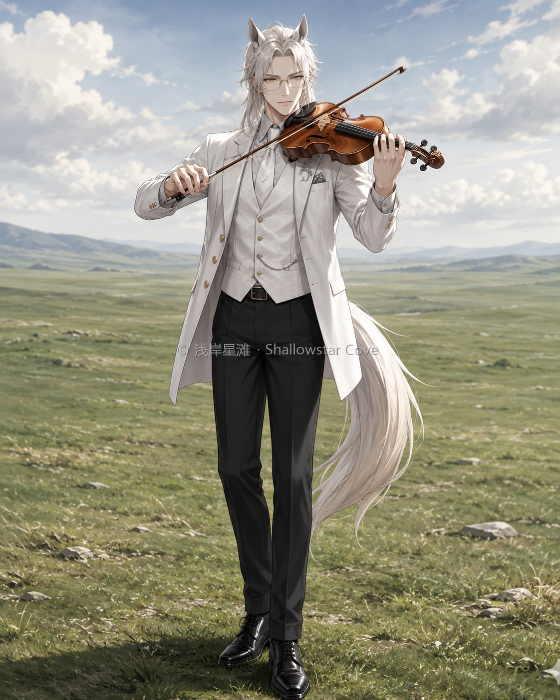
拟人形态 · 白昼先生 Wynn白发背头、金丝眼镜、细长眼、黑皮鞋与白马尾构成其核心视觉特征。Wynn 是三十多岁的伦敦腔白马绅士，低沉、老成、克制，却始终向往风、旅行与辽阔草原。
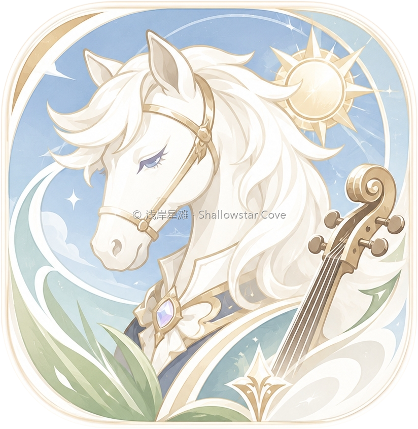
浅岸星滩 · 潮风牧场 Shallowstar Cove · Tidewind Pasture「潮风牧场」是浅岸星滩大世界中的外缘边界地貌。这里由海风、草浪、白昼光线与小提琴声共同构成，也承载 Wynn 作为英伦伦敦近郊庄园出身的混血白马绅士的个人故事：他向往自由、远行与风，在草原上奔跑，也在海风抵达的地方拉响小提琴。

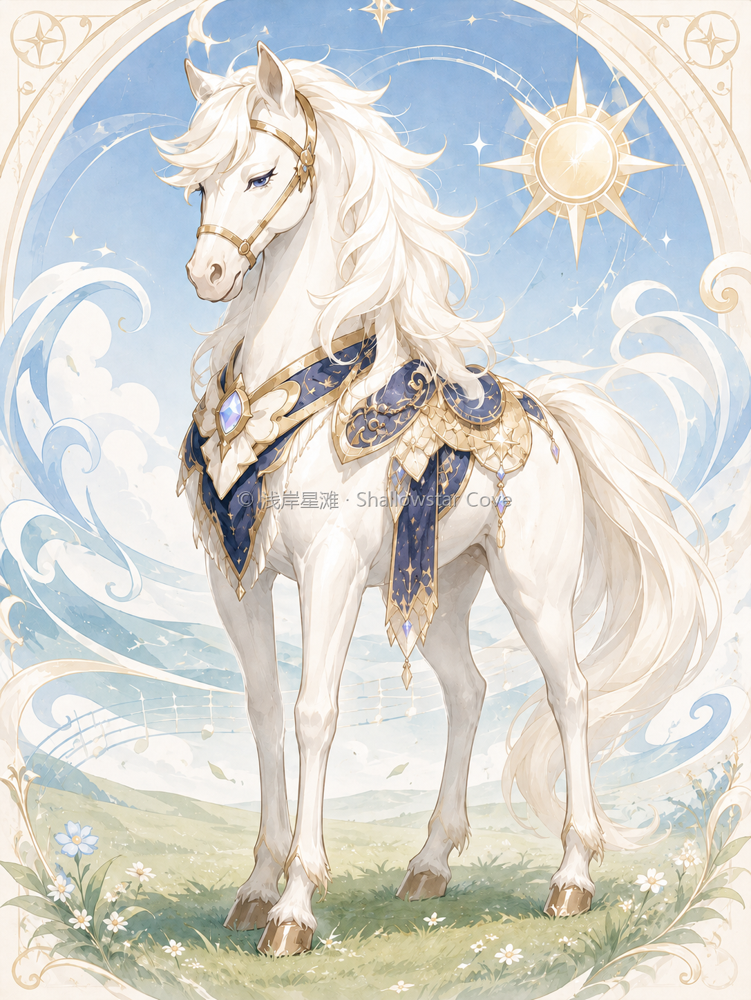
「潮风牧场」不是与浅岸星滩割裂的独立主题，而是其大世界结构中的边界地貌。该区域以草浪、海风、白色花絮与远处的小提琴声构成空间识别，让原本以海岸为核心的治愈叙事获得更广阔的延展方向。
这里延续了浅岸星滩的治愈气质，却以草原、白昼、风与弦乐作为新的视觉语言。该区域被命名为「潮风牧场」。
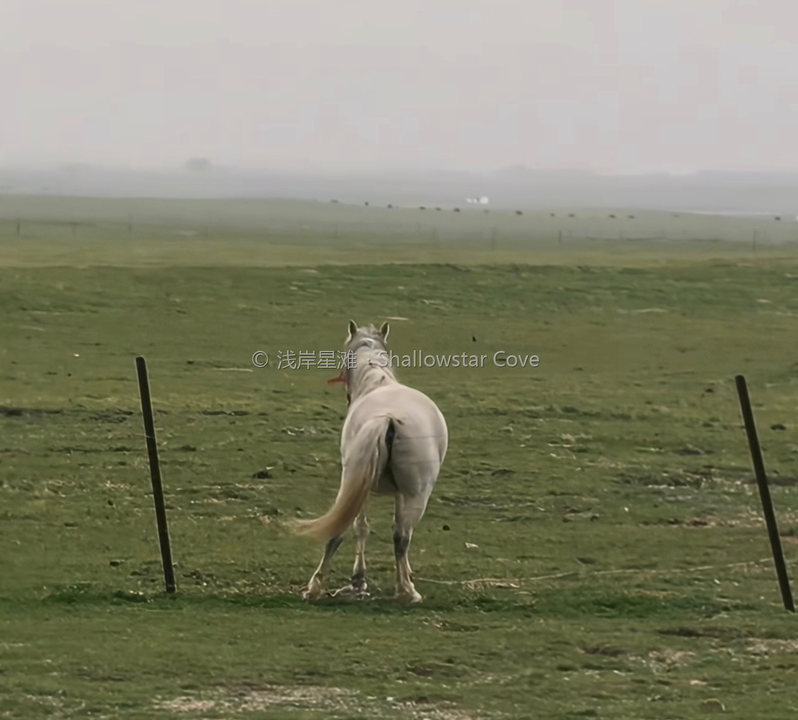
Wynn 的灵感源自创作者在短视频平台上看到的一段白马影像：草原上的白马正在做出带有喜剧感的挠痒动作。画面本身具有轻松的荒诞感，但白色马鬃、尾巴、草原环境与背影轮廓同时呈现出清晰的角色化潜力。
Wynn 是「潮风牧场」的守望者，也是浅岸星滩边界地貌中出现的小提琴手。他出生于英国伦敦近郊庄园，设定为英伦混血白马，带有英国纯血马的修长体态与优雅步幅。三十多岁的他并非主角团成员，而是承担空间引导与情绪转场功能的支线角色：他向往自由、远行与风，常在草原上奔跑，也会在海风抵达的傍晚拉响小提琴。
Wynn 的说话声是低沉成熟的英伦男中音，带有克制、老钱感的伦敦腔；他的琴声则比语言更自由。软软的竖琴代表海水、月光与安抚，Wynn 的小提琴代表风、白昼与远行。二者共同构成“水与风”的情绪对照：前者指向停留与休息，后者指向整理状态后的再次出发。
如果说拟人形态是 Wynn 作为“角色”与你对视的样子，那么白马形态更像他作为“意象”留在潮风牧场里的样子。它不需要开口，也不需要复杂配饰，只靠白鬃、光线、草浪与静默站姿，就能把这个角色的来源、气质与边界感完整地说出来。
风总是先替人开路。你只要往前走就好。
The wind always clears the way first. You only need to keep walking.
我喜欢风。它不用解释自己要到哪里去，却总是能到达该抵达的地方。
I like the wind. It never explains where it is going, yet it always reaches where it belongs.
如果累了，就先在这里坐一会儿吧。我会替你把傍晚的琴声留住。
If you're tired, sit here for a while. I'll keep the evening violin here for you.
等你准备好了，再继续出发。路不会消失，白昼也会陪着你。
When you're ready, set out again. The road will not disappear, and daylight will stay with you.
用于页面顶部导航栏左侧的识别图形。图像以白马、小提琴、白昼太阳与风感弧线为核心元素，建立「白昼先生 Wynn」与「潮风牧场」的第一视觉入口。
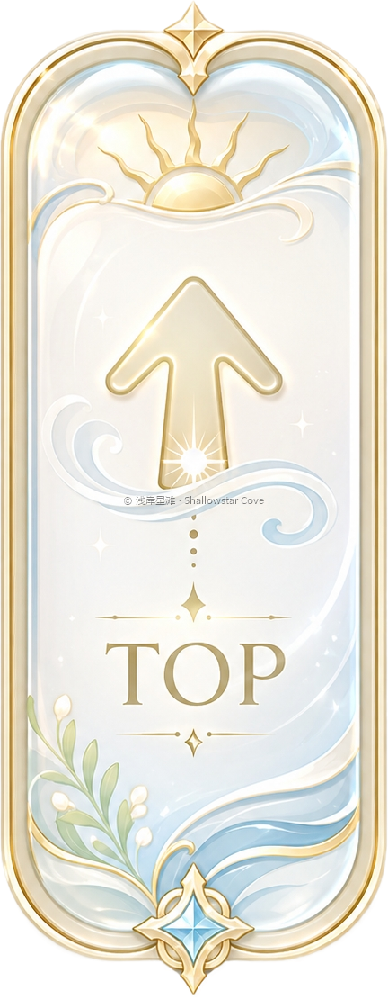
用于页面右侧悬浮导航，承担快速回到页面顶部的交互功能。整体采用竖向铭牌造型，以珍珠白玻璃质感、浅金边框、日光与海风装饰强化页面的幻想系 UI 风格。
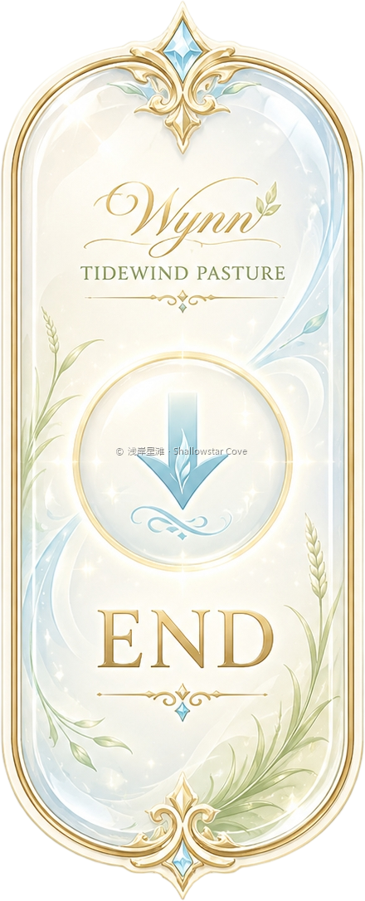
用于页面右侧悬浮导航，承担快速前往页面底部的交互功能。设计延续同组铭牌语言，并加入 Wynn 字样、牧场草叶与向下箭头，形成与顶部按钮成套的视觉系统。
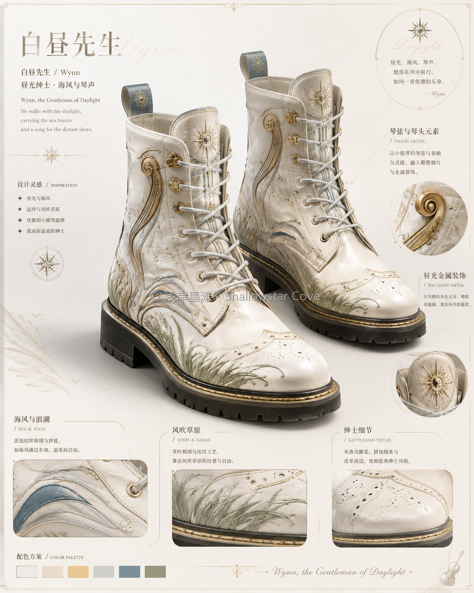
这一版马丁靴延续了 Wynn 的白昼绅士气质，整体以米白皮革、浅金金属与风吹草浪的纹样为基础。鞋侧融入小提琴卷头的弧线装饰，让「伦敦绅士、自由远行、风与草原」从角色立绘继续延展到服饰系统之中。
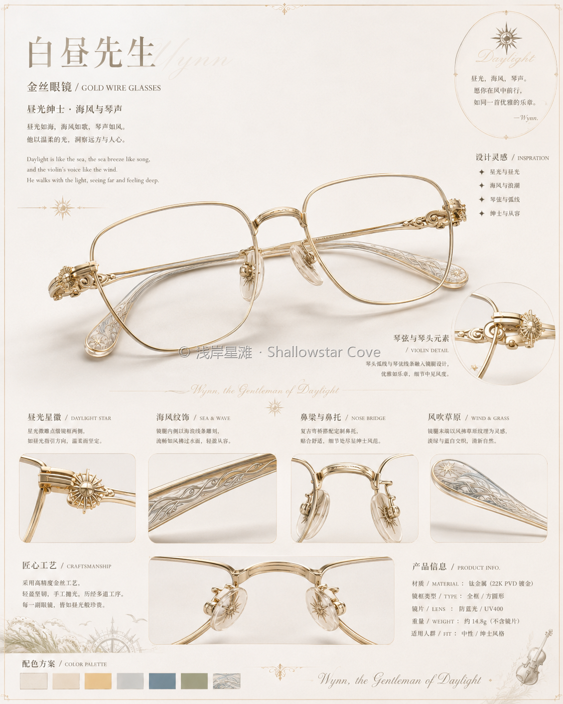
该款金丝眼镜作为 Wynn 的识别性配件设定，围绕「白昼、海风、弦乐」展开。镜腿与鼻托细节融入海浪、星光与琴弦元素，使配饰本身也具备角色叙事感，强化其伦敦老钱绅士般的成熟、克制与距离感。
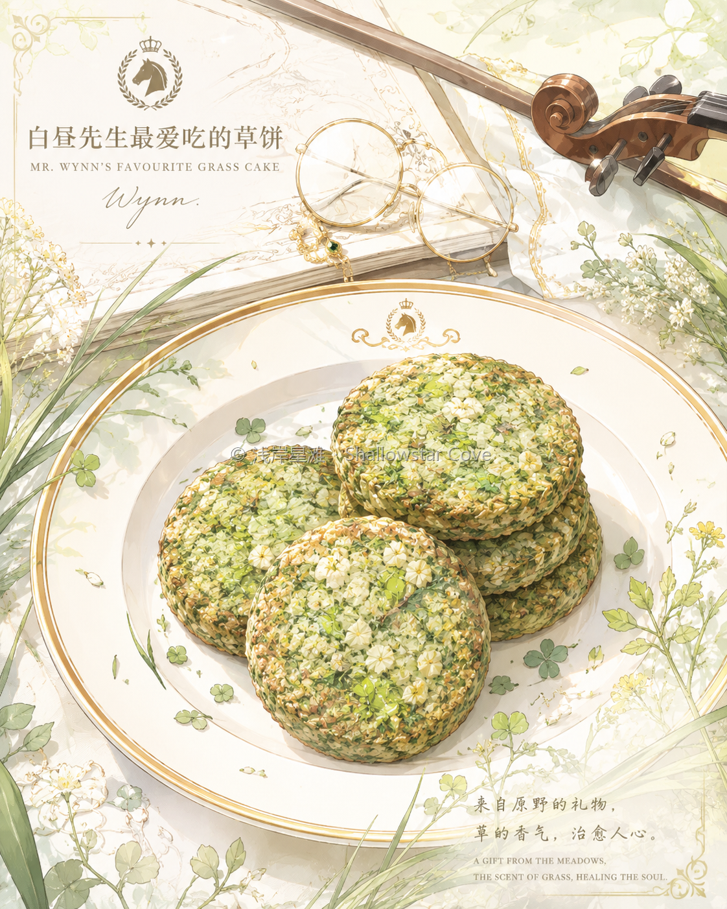
这是 Wynn 最喜欢的潮风牧场草饼。草料来自牧场边缘的柔草、白色小花、三叶草与晒过太阳的香草碎，口感被设定成清淡、干净、带一点草原甜香。它不是夸张的魔法食物，更像白昼先生在远行前会安静带走的一份小点心。
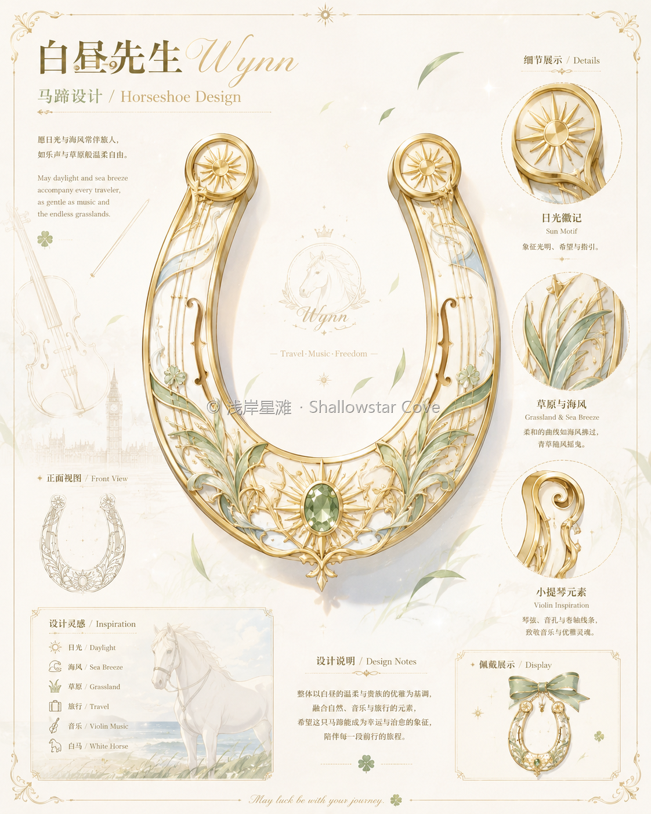
马蹄设计把“旅行、幸运、音乐与白昼”放在同一个符号里。主体使用浅金金属与白色珐琅质感，加入日光徽记、草叶纹样、小提琴弧线和绿色宝石，让它既像 Wynn 的随身护符，也像潮风牧场赠给远行者的祝福。
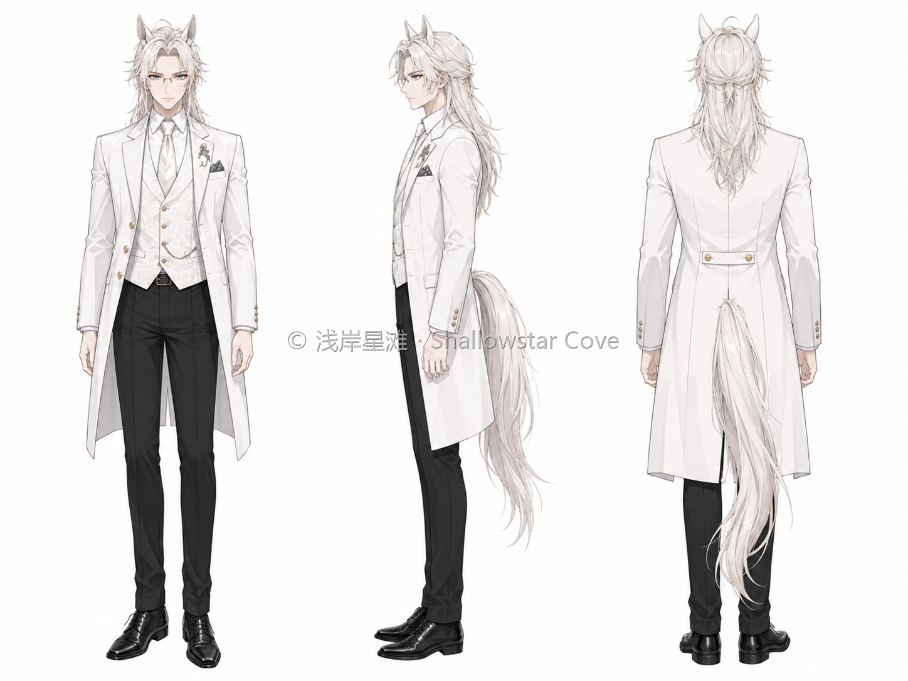
三视图用于整理 Wynn 拟人形态的正面、侧面与背面设定。白色长外套、马耳、金丝眼镜、马尾、黑色西裤与皮鞋共同构成角色识别点；背面视图则补足长发、尾巴与外套结构，方便后续绘制插画、建模或继续拓展服饰道具。
Wynn 会把偶然拾到的蒲公英夹进正在读的书页里。不是为了纪念某一天，而是想把风短暂停下来时留下的形状，悄悄留在自己身边。
比起夸张的饰品，他更喜欢这种几乎没有重量的小东西。白色蒲絮夹在谱纸与琴盒之间，像一口没有说出口的心事，也像他总会随手带走的一点风。
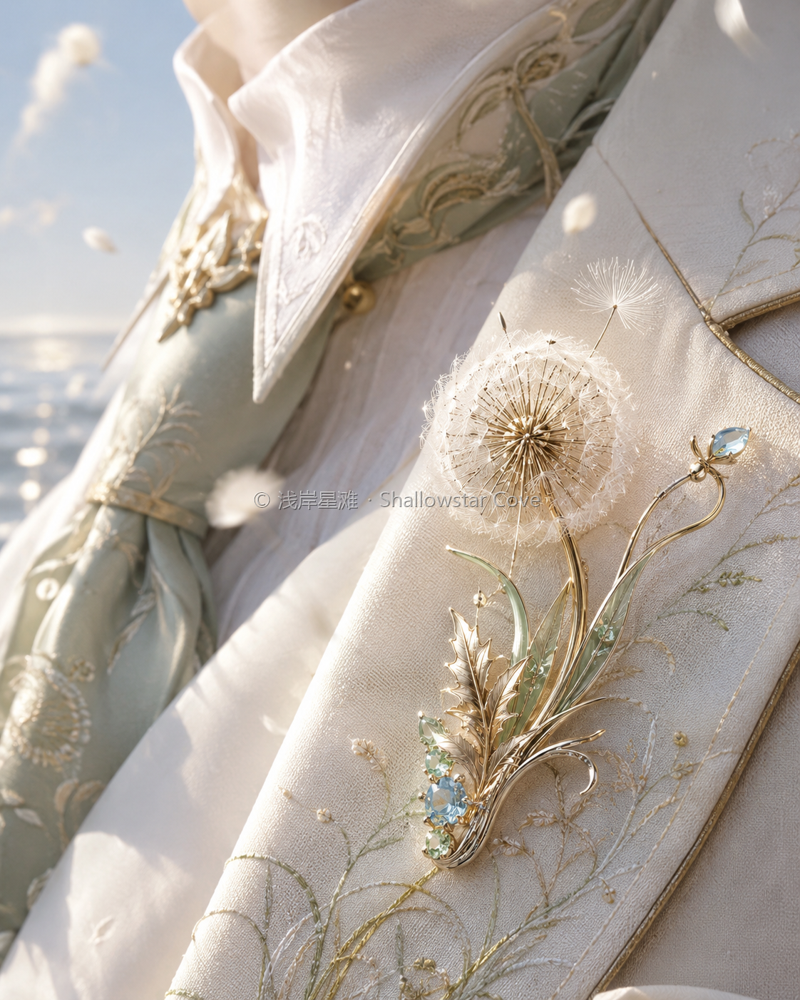
这一枚小胸针属于“只有靠近时才会注意到”的那类细节。它不会破坏他的克制感，反而像在白昼西装上留下了一点柔软的风，让整个角色更有私人物件的温度。
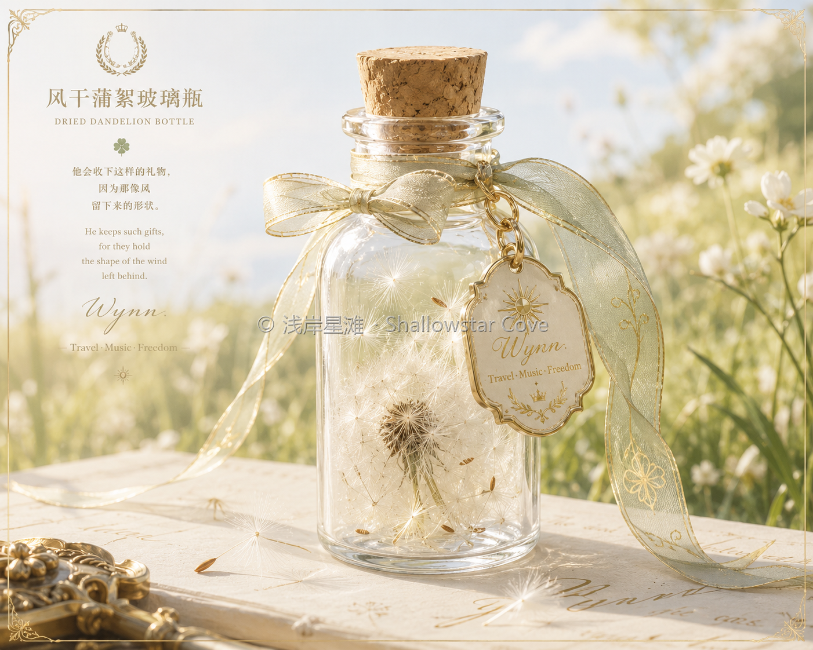
他会收下这样的礼物，因为那像风留下来的形状。小小的玻璃瓶里装着晒干的蒲絮、日光与草野气息，像是一件不需要解释就能成立的温柔纪念物。
软软第一次认识 Wynn，不是因为见到他，而是因为听见了他的琴声。夜晚的海边，她在弹竖琴时偶然听见远方传来的小提琴；那段旋律像从草原尽头吹来的白昼，让她第一次意识到：浅岸星滩之外，还有被风照亮的辽阔原野。
卡菈大概会先问他有没有吃饭。Wynn 不太擅长热闹回应，但会认真收下她递来的椰子饮料。临走前，他会把一束晒过太阳的草花放在厨房窗台边。
阿隐不会马上靠近他，但会记住那段琴声的节拍。Wynn 的温柔不是追问，也不是靠近，而是站在刚刚好的距离外，让风先替他说话。
莓莓肯定会绕着他转好几圈，追问白马尾能不能编辫子。Wynn 表面上装作没听见，最后还是会弯下腰，让她摸一下那撮被风吹乱的马鬃。
当观众在浅岸星滩主页停留时，背景音乐可逐渐叠入一段远处的小提琴声。观众触发白色音符后，页面由海岸视觉过渡至草浪视觉，形成进入「潮风牧场」的沉浸式转场。
软软支线可作为页面叙事入口：先听见远处小提琴，再进入「昼光与夜潮的初遇」选项卡。进入该区域后，页面底部以草浪替代海浪，鼠标移动时生成细微白色音轨，模拟琴弓划过空气的视觉效果。
Wynn 的专属背景音乐以小提琴为核心识别音色。旋律处理应保持清晰、克制与流动感，避免过强节奏或厚重编曲，以突出英伦白马、草原、白昼与风的角色意象。
音乐整体适合作为网页背景循环播放，风格定位为治愈系动画角色主题曲。若后续加入语音，Wynn 应使用低沉成熟的英伦男中音，偏伦敦腔与老钱绅士感：语速慢、发音清楚、情绪克制，温和但有重量。
浅岸星滩 · Shallowstar Cove
边界地貌设定页：潮风牧场 / 白昼先生 Wynn / 创作者：白kar